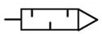
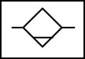
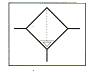
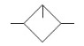

| Dispositivos Auxiliares
Básicamente, un circuito mecánico o hidráulico consiste en un compresor o una bomba que da presión a un fluido y lo pone en movimiento, unos conductos por donde el fluido se mueve, unas válvulas que lo distribuyen de un sitio al otro y un cilindro que se desplaza debido a la acción de este fluido. Pero junto a estos constituyentes básicos
hay otros que también resultan esenciales para el buen funcionamiento del circuito.
Los elementos auxiliares de uso común en los circuitos neumáticos son:
| Silenciador: Se utiliza par reducir el ruido que produce el aire comprimido cuando escapa a la atmósfera. |
 |
| Secador: Tiene por objetivo, reducir la cantidad de vapor de agua que posee el aire. |
 |
| Filtro: Tiene por objeto la eliminación del mayor número posible de partículas de polvo o impurezas que presenta el aire. Durante el filtrado también se elimina humedad. |
 |
| Lubricador: Los receptores neumáticos (cilindros y motores), son elementos mecánicos sometidos a rozamiento, por lo que resulta necesario su lubricación. Ésta se consigue añadiendo aceite al aire comprimido. |
 |
| Regulador de Presión: No todos los dispositvos de un mismo circuito tienen que trabajar a la misma presión. Es más, un circuito no tiene por qué trabajar a la presión que suministra el compresor. Un regulador nos permite seleccionar la presión necesaria (siempre menor que la del compresor). |
 |
Estes tres últimos dispositivos suelen formar lo que se denomina unidad de mantenimiento:
 
En los circuitos hidráulicos el mantenimiento es más sencillo, puesto que los líquidos son bastante menos problemáticos que el aire comprimido, y el único elemento de los anteriores que es necesario, aparte del manómetro, es el filtro para eliminar partículas extrañas del agua. |